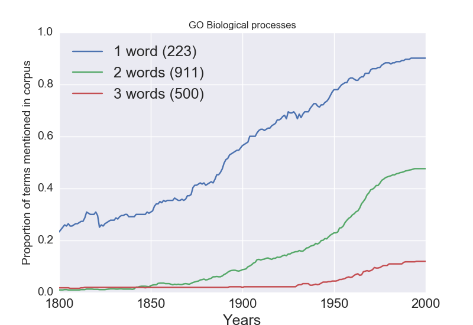
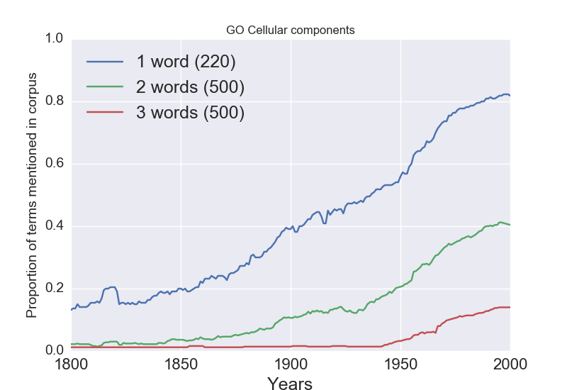
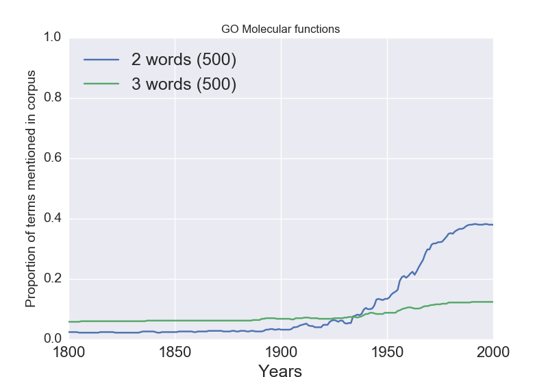

This was originally posted on Blogger here.
I just returned from a fabulous meeting on Rethinking the Taxonomy of Psychology, hosted by Mike Anderson, Tim Bayne, and Jackie Sullivan. I think that in another life I must have been a philosopher, because I always have so much fun hanging out with them, and this time was no different. In particular, the discussions at this meeting moved from simply talking about whether there is a problem with our ontology (which is old hat at this point) to specifically how we can think about using neuroscience to revise the ontology. I was particularly excited to see all of the interest from a group of young philosophers whose work is spanning philosophy and cognitive neuroscience, who I am counting on to keep the field moving forward!
I have long made the the point that the conceptual structure of current psychology is not radically different from that of William James in the 19th century. This seems plausible on its face if you look at some of the section headings from his 1890 “To How Many Things Can We Attend At Once?”
- “The Varieties Of Attention.”
- “The Improvement Of Discrimination By Practice”
- “The Perception Of Time.”
- “Accuracy Of Our Estimate Of Short Durations”
- “To What Cerebral Process Is The Sense Of Time Due?”
- “Forgetting.”
- “The Neural Process Which Underlies Imagination”
- “Is Perception Unconscious Inference?”
- “How The Blind Perceive Space.”
- “Emotion Follows Upon The Bodily Expression In The Coarser Emotions At Least.”
- “No Special Brain-Centres For Emotion”
- “Action After Deliberation”:
Beyond the sometimes flowery language, there are all topics that one could imagine being topics of research papers today, but for my talk I wanted to see if there was more direct evidence that the psychological ontology is less different (and thus more “folksy”) than ontologies in other sciences. To address this, I did a set of analyses that looked at the linguistic history of terms in the contemporary psychological ontology (as defined in the Cognitive Atlas) as compared to terms from contemporary biology (as enshrined in the Gene Ontology). I started (with a bit of help from Vanessa Sochat) by examining the proportion of terms from the Cognitive Atlas that were present in James’ Principles (from the full text available here). This showed that 22.9% of the terms in our current ontology were present in James’s text (some examples are: goal, deductive reasoning, effort, false memory, object perception, visual attention, task set, anxiety, mental imagery, unconscious perception, internal speech, primary memory, theory of mind, judgment).
How does this compare to biology? To ask this, I obtained two biology textbooks published around the same time as James’ Principles (T. H. Huxley’s Course of Elementary Instruction in Practical Biology from 1892, and T. J. Parker’s Lessons in Elementary Biology from 1893), which are both available in full text from Google Books. In each of these books I assessed the presence of each term from the Gene Ontology, separately for each of the GO subdomains (biological processes, molecular functions, and cellular components). Here are the results:
| Huxley | Parker | Overlap | |
| biological process (28,566) | 0.09% (26) | 0.1% (32) | 20 |
| molecular functions (10,057) | 0 | 0 | - |
| cellular components (3,903) | 1.05% (41) | 1.01% (40) | 25 |
The percentages of overlap are much lower, perhaps not surprisingly since the number of GO terms is so much larger than the number of Cognitive Atlas terms. But even the absolute numbers are substantially lower, and there is not one mention of any of the GO molecular functions (striking but completely unsurprising, since molecular biology would not be developed for many more decades).
These results were interesting, but it could be that they are specific to these particular books, so I generalized the analysis using the Google N-Gram corpus, which indexes the presence of individual words and phrases across more than 3 million books. Using a python package that accesses the ngram viewer API, I estimated the presence of all of the Cognitive Atlas terms as well as randomly selected subsets of each of the GO subdomains in the English literature between 1800 and 2000; I’m planning to rerun the analysis on the full corpus using the downloaded version of the N-grams corpus, but using this API required throttling that prevented me from the full sets of GO terms. Here are the results for the Cognitive Atlas:

It is difficult to imagine stronger evidence that the ontology of psychology is relying on pre-scientific concepts; around 80% of the one-word terms in the ontology were already in use in 1800! Compare this to the Gene Ontology terms (note that there were not enough single-word molecular function terms to get a reasonable estimate):



It’s clear that the while a few of the terms in these ontologies were in use prior to the development of the biosciences, the proportion is much smaller than what one sees for psychology. In my talk, I laid out two possibilities arising from this:
- Psychology has special access to its ontology that obviates the need for a rejection of folk concepts
- Psychology is due for a conceptual revolution that will leave behind at least some of our current concepts
My guess is that the truth lies somewhere in between these. The discussions that we had at the meeting in London provided some good ideas about how to conceptualize the kinds of changes that neuroscience might drive us to make to this ontology. Perhaps the biggest question to come out of the meeting was whether a data-driven approach can ever overcome the fact that the data were collected from experiments that are based on the current ontology. I am guessing that it can (given, e.g. the close relations between brain activity present in task and rest), but this remains one of the biggest questions to be answered. Fortunately there seems to be lots of interest and I’m looking forward to great progress on these questions in the next few years.
6 comments captured from the original post
KalinaChristoff · 2016-04-18
Russ Poldrack · 2016-04-18
Michael Frank · 2016-04-18
Russ Poldrack · 2016-04-19
Brad Buchsbaum · 2016-04-19
Russ Poldrack · 2016-04-19